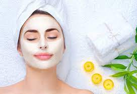

Hair Spa

An extensive hair spa process removes all dirt, pollutants and contaminants from the pores. Once your scalp is rid of such impurities, your hair growth gets a stimulus. Hair spa is a procedure that helps make hair strong, bouncy and shiny, while simultaneously dealing with dandruff, damaged hair, and hair fall control.
If you used to have strong and healthy hair that is thinning fast, regular hair spa treatments can save your hair. Regular hair spas improve blood circulation in your scalp that in turn stimulates hair growth. It is recommended to go for hair spa treatments at least twice a month for visible results.
Hair colour
Hair color is the pigmentation of hair follicles due to two types of melanin: eumelanin and pheomelanin. … Levels of melanin can vary over time causing a person’s hair color to change, and it is possible to have hair follicles of more than one color on the same person.White’s rule of thumb is that light skinned, light eyed girls will look more natural with lighter shades, while dark skin and dark eyes work better with darker shades. … Neutral skin tones can go with either warm or cool hues. The time of year can also influence your choice.
Keratin
Keratin is the type of protein that makes up your hair, skin, and nails. … Since keratin is the structural building block of your hair, some people believe that keratin supplements, products, and treatments can help strengthen your hair and make it look healthier.However, it must be taken in correctly. Keratin treatments may be able to straighten hair, but they damage it in the process. This is because keratin treatment products contain ingredients other than keratin (such as formaldehyde) and the high heat of the styling tools used can burn and break hair, causing it to shed.
Hair Highlights
Hair highlighting/lowlighting is changing a person’s hair color, using lightener or haircolor to color hair strands. There are four basic types of highlights: foil highlights, hair painting, frosting, and chunking. Highlights can be done in natural or unnatural colors.
Highlights and coloring — Highlights and semi-permanent dyes aren’t as damaging as bleach, but they aren’t without consequences, Mirmirani says. They can also change the inner structure of the hair, causing a lackluster look and dryness, especially if you frequently color to hide roots or gray hair.
Highlights and coloring — Highlights and semi-permanent dyes aren’t as damaging as bleach, but they aren’t without consequences, Mirmirani says. They can also change the inner structure of the hair, causing a lackluster look and dryness, especially if you frequently color to hide roots or gray hair.
Hair Straightening

Hair straightening is a hair styling technique used since the 1890s involving the flattening and straightening of hair in order to give it a smooth, streamlined, and sleek appearance. It became very popular during the 1950s among black males and females of all races.Chemical straightening or relaxing treatments work in the same way as a reverse perm, however instead of using the solution to curl straight hair, it’s used to permanently straighten curly hair. … However, while the relaxing process is damaging, in the long term it may be beneficial to your hair’s condition.
Hair cuts
Feathering is a texturizing technique that shapes the ends of your tresses, while layering is a cut that creates variable lengths throughout your hair. The term “feathering” explains how the stylist uses the scissors to texturize your tresses.A feather cut is a cut at ear level to hair and that lies on the neck. Feather cut is suitable for those people who do not have much time for spending on the hair. The term “feathering” explains how the stylist uses the scissors to texturize your tresses.
Our Skin Treatments
Facial
A facial is a family of skin care treatments for the face, including steam, exfoliation, extraction, creams, lotions, facial masks, peels, and massage. They are normally performed in beauty salons, but are also a common spa treatment. They are used for general skin health as well as for specific skin conditions.A facial is essentially a multi-step skin treatment that is one of the best ways to take care of your skin. A facial cleanses, exfoliates, and nourishes the skin, promoting a clear, well-hydrated complexion and can help your skin look younger.
Advance Facial
Our Advanced Facial Treatments are customized to target specific needs with the help of advanced skincare products + latest non-invasive technology that will help decongest your pores, brighten your skin complexion, smooth fine lines and wrinkles and leave your skin feeling hydrated and refreshed.
Types of Facials. Classic A classic or standard facial usually involves cleansing, exfoliating, extractions, a mask, and a moisturizer.